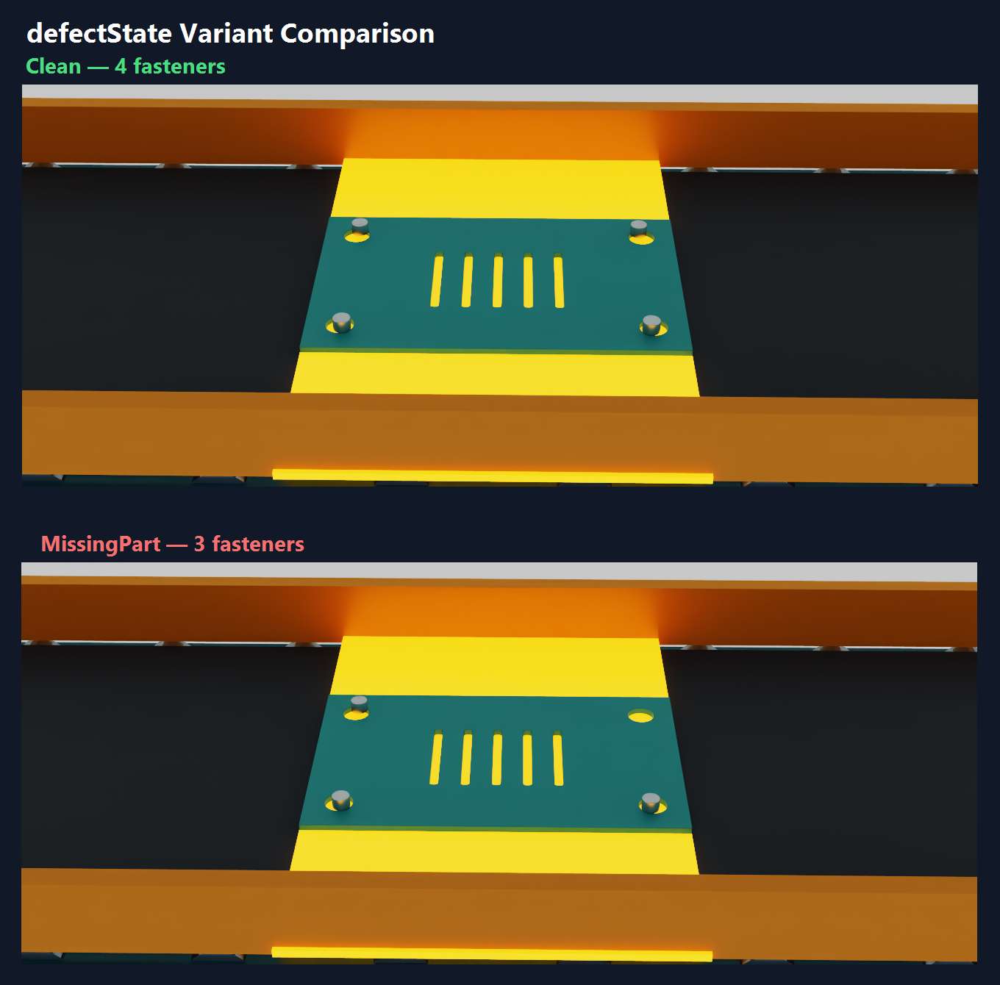
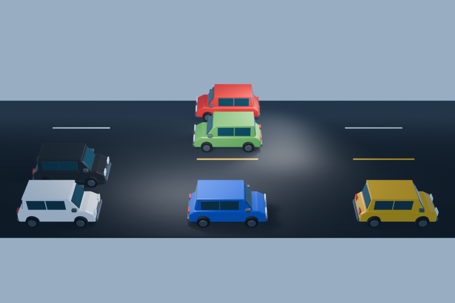

Assistant Design Engineer
民盛應用企業股份有限公司
Recreation-product manufacturing
王奕儼 / IAN WANG · TECHNICAL ARTIST
I build procedural 3D tools and validated asset pipelines for digital twin, simulation and synthetic scene generation.
Using Blender, Geometry Nodes, Python and OpenUSD, I create procedural equipment, scene assembly and synthetic-data workflows.
SELECTED WORK
The flagship case targets AI factories; two supporting systems demonstrate transferable asset-pipeline skills for smart manufacturing and smart cities.
AI FACTORY · OPENUSD · SYNTHETIC DATA
Procedural conveyor, geometric defects, OpenUSD scene assembly, 50 paired RGB/JSON outputs and automated validation.
Full case study ↗
02BLENDER PYTHON · LOD · PBR · USD
Mesh reduction, three LODs, PBR/ORM baking and relocatable USD assets for synthetic engineering test meshes.
Case brief ↗ 03
03GEOMETRY NODES · ADD-ON · SDG
A Blender tool for 1–8 lanes, 1–50 vehicle instances and reproducible scene variations.
Case brief ↗
ABOUT / EXPERIENCE
Technical Artist with 10+ years of 3D learning and hands-on practice, and 3+ years of work experience. My approach emphasizes controllable parameters, reproducible results, explicit limitations and complete delivery.
ian90315@gmail.com ↗民盛應用企業股份有限公司
Recreation-product manufacturing
TaiDoc Technology Corporation
Medical-device manufacturing
Product design and development, interior-design planning and graphic design